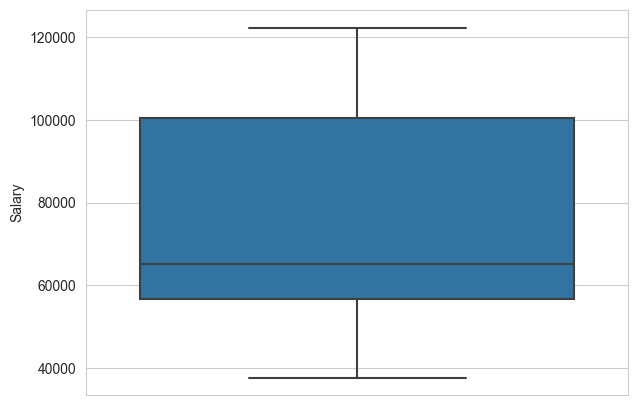
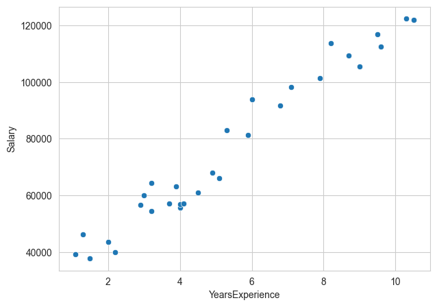
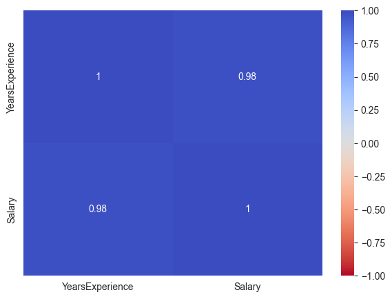

Regresión lineal simple#
Paquetes#
import numpy as np
import matplotlib.pyplot as plt
import pandas as pd
import seaborn as sns
import warnings
from sklearn.model_selection import train_test_split
from sklearn.linear_model import LinearRegression
from sklearn.metrics import mean_squared_error, mean_absolute_error, r2_score,mean_squared_log_error
import statsmodels.formula.api as smf
# cargar datos
filename='C:/Users/cdeor/OneDrive/Documentos/MachineLearningDipSerfinanzas/jbook_ml202430/docs/_data/dataml/Salary_Data.csv'
df_salary=pd.read_csv(filename)
Análisis exploratorio#
df_salary.head()
| YearsExperience | Salary | |
|---|---|---|
| 0 | 1.1 | 39343.0 |
| 1 | 1.3 | 46205.0 |
| 2 | 1.5 | 37731.0 |
| 3 | 2.0 | 43525.0 |
| 4 | 2.2 | 39891.0 |
# informacion
df_salary.info()
<class 'pandas.core.frame.DataFrame'>
RangeIndex: 30 entries, 0 to 29
Data columns (total 2 columns):
# Column Non-Null Count Dtype
--- ------ -------------- -----
0 YearsExperience 30 non-null float64
1 Salary 30 non-null float64
dtypes: float64(2)
memory usage: 608.0 bytes
# dimensiones
df_salary.shape
(30, 2)
df_salary.describe().T
| count | mean | std | min | 25% | 50% | 75% | max | |
|---|---|---|---|---|---|---|---|---|
| YearsExperience | 30.0 | 5.313333 | 2.837888 | 1.1 | 3.20 | 4.7 | 7.70 | 10.5 |
| Salary | 30.0 | 76003.000000 | 27414.429785 | 37731.0 | 56720.75 | 65237.0 | 100544.75 | 122391.0 |
# Datos nulos
df_salary.isnull().sum()
YearsExperience 0
Salary 0
dtype: int64
# ignorar advertencias
warnings.filterwarnings('ignore')
# grilla
sns.set_style('whitegrid')
# cajas
plt.figure(figsize=(7,5))
sns.boxplot(y = df_salary['Salary'])
plt.show()

# Diagrama de dispersion de salary vs yearexp
plt.figure(figsize=(7,5))
sns.scatterplot(x='YearsExperience',y='Salary',data=df_salary)
plt.show()

# mapa de calor con la correlacion
plt.figure(figsize=(7,5))
cor = df_salary.corr()
sns.heatmap(cor,annot= True,cmap='coolwarm_r',vmin=-1,vmax=1)
plt.show()

Construcción del modelo#
# Separacion de variables predictoras con objetivo
X = df_salary[['YearsExperience']]
y = df_salary['Salary']
# Seleccionar el conjunto de entrenamiento y prueba (20%)
X_train, X_test, y_train, y_test = train_test_split(
X,
y,
test_size=0.2,
random_state=42,
shuffle=True
)
# instancia
rls = LinearRegression()
# crear el modelo
rls.fit(X_train,y_train)
LinearRegression()In a Jupyter environment, please rerun this cell to show the HTML representation or trust the notebook.
On GitHub, the HTML representation is unable to render, please try loading this page with nbviewer.org.
LinearRegression()
print(rls.coef_)
print(rls.intercept_)
[9423.81532303]
25321.583011776813
# prediccion entrenamiento
y_pred_train =rls.predict(X_train)
y_pred_train[0:3]
array([122386.880839 , 107308.77632215, 63016.8443039 ])
# prediccion prueba
y_pred_test =rls.predict(X_test)
y_pred_test[0:3]
array([115790.21011287, 71498.27809463, 102596.86866063])
Métricas#
# Error cuadratico medio
print('training set MSE:{:.6f}'.format(mean_squared_error(y_train,y_pred_train)))
print('testing set MSE:{:.6f}'.format(mean_squared_error(y_test,y_pred_test)))
# Error absoluto medio
print('training set MAE:{:.6f}'.format(mean_absolute_error(y_train,y_pred_train)))
print('testing set MAE:{:.6f}'.format(mean_absolute_error(y_test,y_pred_test)))
# raiz del error cuadratico medio
print('training set RMSE:{:.6f}'.format(np.sqrt(mean_squared_error(y_train,y_pred_train))))
print('testing set RMSE:{:.6f}'.format(np.sqrt(mean_squared_error(y_test,y_pred_test))))
# r2
print('training set R2:{:.6f}'.format(r2_score(y_train,y_pred_train)))
print('testing set R2:{:.6f}'.format(r2_score(y_test,y_pred_test)))
# r2 otra forma
print('training set R2:{:.6f}'.format(rls.score(X_train,y_train)))
print('testing set R2:{:.6f}'.format(rls.score(X_test,y_test)))
training set MSE:27102249.731261
testing set MSE:49830096.855908
training set MAE:4221.046734
testing set MAE:6286.453831
training set RMSE:5205.982110
testing set RMSE:7059.043622
training set R2:0.964540
testing set R2:0.902446
training set R2:0.964540
testing set R2:0.902446
#datos de train
datos_train = pd.concat([X_train,y_train],axis=1)
# construir el modelo
modelo = smf.ols(formula = 'Salary ~ YearsExperience',data = datos_train)
resultado = modelo.fit()
print(resultado.summary())
OLS Regression Results
==============================================================================
Dep. Variable: Salary R-squared: 0.965
Model: OLS Adj. R-squared: 0.963
Method: Least Squares F-statistic: 598.4
Date: sáb., 19 oct. 2024 Prob (F-statistic): 1.91e-17
Time: 12:04:09 Log-Likelihood: -239.44
No. Observations: 24 AIC: 482.9
Df Residuals: 22 BIC: 485.2
Df Model: 1
Covariance Type: nonrobust
===================================================================================
coef std err t P>|t| [0.025 0.975]
-----------------------------------------------------------------------------------
Intercept 2.532e+04 2285.938 11.077 0.000 2.06e+04 3.01e+04
YearsExperience 9423.8153 385.233 24.463 0.000 8624.891 1.02e+04
==============================================================================
Omnibus: 0.647 Durbin-Watson: 2.026
Prob(Omnibus): 0.724 Jarque-Bera (JB): 0.697
Skew: 0.323 Prob(JB): 0.706
Kurtosis: 2.472 Cond. No. 12.5
==============================================================================
Notes:
[1] Standard Errors assume that the covariance matrix of the errors is correctly specified.
Regresión multiple#
Libreria#
import pandas as pd
import numpy as np
import matplotlib.pyplot as plt
import seaborn as sns
from sklearn.model_selection import train_test_split
from sklearn.linear_model import LinearRegression
from sklearn.preprocessing import StandardScaler
from sklearn.pipeline import make_pipeline
Importacion de datos#
df = pd.read_csv("C:/Users/cdeor/OneDrive/Documentos/MachineLearningDipSerfinanzas/jbook_ml202430/docs/_data/dataml/housing.csv")
# Mostrar las primeras filas del conjunto de datos
df.head()
| longitude | latitude | housing_median_age | total_rooms | total_bedrooms | population | households | median_income | median_house_value | ocean_proximity | |
|---|---|---|---|---|---|---|---|---|---|---|
| 0 | -122.23 | 37.88 | 41.0 | 880.0 | 129.0 | 322.0 | 126.0 | 8.3252 | 452600.0 | NEAR BAY |
| 1 | -122.22 | 37.86 | 21.0 | 7099.0 | 1106.0 | 2401.0 | 1138.0 | 8.3014 | 358500.0 | NEAR BAY |
| 2 | -122.24 | 37.85 | 52.0 | 1467.0 | 190.0 | 496.0 | 177.0 | 7.2574 | 352100.0 | NEAR BAY |
| 3 | -122.25 | 37.85 | 52.0 | 1274.0 | 235.0 | 558.0 | 219.0 | 5.6431 | 341300.0 | NEAR BAY |
| 4 | -122.25 | 37.85 | 52.0 | 1627.0 | 280.0 | 565.0 | 259.0 | 3.8462 | 342200.0 | NEAR BAY |
Datos faltantes#
df.isna().sum()
(df.isna().sum()/ df.shape[0])*100
longitude 0.000000
latitude 0.000000
housing_median_age 0.000000
total_rooms 0.000000
total_bedrooms 1.002907
population 0.000000
households 0.000000
median_income 0.000000
median_house_value 0.000000
ocean_proximity 0.000000
dtype: float64
df2 = df.copy()
df2['total_bedrooms'] = df2['total_bedrooms'].fillna(df2['total_bedrooms'].mean())
df2.info()
<class 'pandas.core.frame.DataFrame'>
RangeIndex: 20640 entries, 0 to 20639
Data columns (total 10 columns):
# Column Non-Null Count Dtype
--- ------ -------------- -----
0 longitude 20640 non-null float64
1 latitude 20640 non-null float64
2 housing_median_age 20640 non-null float64
3 total_rooms 20640 non-null float64
4 total_bedrooms 20640 non-null float64
5 population 20640 non-null float64
6 households 20640 non-null float64
7 median_income 20640 non-null float64
8 median_house_value 20640 non-null float64
9 ocean_proximity 20640 non-null object
dtypes: float64(9), object(1)
memory usage: 1.6+ MB
Construccion del modelo#
df_dummies = pd.get_dummies(df2,columns = ['ocean_proximity'],drop_first=True)
X = df_dummies.drop(columns=['median_house_value'])
y = df_dummies['median_house_value']
X_train, X_test,y_train,y_test = train_test_split(X,y,
test_size=0.2,
random_state=42,
shuffle=True)
pipeline_rl = make_pipeline(StandardScaler(),LinearRegression())
pipeline_rl.fit(X_train,y_train)
Pipeline(steps=[('standardscaler', StandardScaler()),
('linearregression', LinearRegression())])In a Jupyter environment, please rerun this cell to show the HTML representation or trust the notebook. On GitHub, the HTML representation is unable to render, please try loading this page with nbviewer.org.
Pipeline(steps=[('standardscaler', StandardScaler()),
('linearregression', LinearRegression())])StandardScaler()
LinearRegression()
print(pipeline_rl.score(X_train,y_train))
print(pipeline_rl.score(X_test,y_test))
0.6496648627123223
0.6257351821159703
Regresion Ridge#
from sklearn.linear_model import Ridge
pipeline_ridge = make_pipeline(StandardScaler(),Ridge(alpha = 100))
pipeline_ridge.fit(X_train,y_train)
print(pipeline_ridge.score(X_train,y_train))
print(pipeline_ridge.score(X_test,y_test))
0.6491527147112037
0.627420419395107
from sklearn.model_selection import GridSearchCV
# Crear un pipeline que estandariza los datos y aplica Ridge
pipeline_ridge = make_pipeline(StandardScaler(),Ridge())
# Definir el rango de valores para el parámetro alpha
param_grid = {
'ridge__alpha': [0.01,0.1,1,10,100,1000], # Usar 'ridge__alpha' para especificar el paso del pipeline
'ridge__solver': ['auto', 'svd', 'cholesky', 'lsqr', 'sag', 'saga'] # Usar 'ridge__solver'
}
# Configurar el Grid Search con validación cruzada
grid_search_ridge = GridSearchCV(pipeline_ridge, param_grid, cv=5, verbose=1,n_jobs=-1,scoring='r2')
# Ejecutar el Grid Search (mejor modelo)
grid_search_ridge.fit(X_train, y_train)
Fitting 5 folds for each of 36 candidates, totalling 180 fits
GridSearchCV(cv=5,
estimator=Pipeline(steps=[('standardscaler', StandardScaler()),
('ridge', Ridge())]),
n_jobs=-1,
param_grid={'ridge__alpha': [0.01, 0.1, 1, 10, 100, 1000],
'ridge__solver': ['auto', 'svd', 'cholesky', 'lsqr',
'sag', 'saga']},
scoring='r2', verbose=1)In a Jupyter environment, please rerun this cell to show the HTML representation or trust the notebook. On GitHub, the HTML representation is unable to render, please try loading this page with nbviewer.org.
GridSearchCV(cv=5,
estimator=Pipeline(steps=[('standardscaler', StandardScaler()),
('ridge', Ridge())]),
n_jobs=-1,
param_grid={'ridge__alpha': [0.01, 0.1, 1, 10, 100, 1000],
'ridge__solver': ['auto', 'svd', 'cholesky', 'lsqr',
'sag', 'saga']},
scoring='r2', verbose=1)Pipeline(steps=[('standardscaler', StandardScaler()),
('ridge', Ridge(alpha=10, solver='lsqr'))])StandardScaler()
Ridge(alpha=10, solver='lsqr')
# importar la libreria
from sklearn.linear_model import Lasso
pipeline_lasso= make_pipeline(StandardScaler(),Lasso())
param_grid = {
'lasso__alpha': [0.1, 1.0, 10.0, 100.0],
'lasso__max_iter': [1000, 5000, 10000],
'lasso__tol': [1e-4, 1e-3, 1e-2],
}
# Configurar el Grid Search con validación cruzada
grid_search_lasso = GridSearchCV(pipeline_lasso, param_grid, cv=5, verbose=1,n_jobs=-1,scoring='r2')
# Ejecutar el Grid Search (mejor modelo)
grid_search_lasso.fit(X_train, y_train)
Fitting 5 folds for each of 36 candidates, totalling 180 fits
GridSearchCV(cv=5,
estimator=Pipeline(steps=[('standardscaler', StandardScaler()),
('lasso', Lasso())]),
n_jobs=-1,
param_grid={'lasso__alpha': [0.1, 1.0, 10.0, 100.0],
'lasso__max_iter': [1000, 5000, 10000],
'lasso__tol': [0.0001, 0.001, 0.01]},
scoring='r2', verbose=1)In a Jupyter environment, please rerun this cell to show the HTML representation or trust the notebook. On GitHub, the HTML representation is unable to render, please try loading this page with nbviewer.org.
GridSearchCV(cv=5,
estimator=Pipeline(steps=[('standardscaler', StandardScaler()),
('lasso', Lasso())]),
n_jobs=-1,
param_grid={'lasso__alpha': [0.1, 1.0, 10.0, 100.0],
'lasso__max_iter': [1000, 5000, 10000],
'lasso__tol': [0.0001, 0.001, 0.01]},
scoring='r2', verbose=1)Pipeline(steps=[('standardscaler', StandardScaler()),
('lasso', Lasso(alpha=10.0))])StandardScaler()
Lasso(alpha=10.0)
grid_search_lasso.best_params_
{'lasso__alpha': 10.0, 'lasso__max_iter': 1000, 'lasso__tol': 0.0001}
from sklearn.neighbors import KNeighborsRegressor
pipeline_knn = make_pipeline(StandardScaler(),KNeighborsRegressor())
param_grid = {
'kneighborsregressor__n_neighbors': range(1,25), # Número de vecinos a considerar
'kneighborsregressor__weights': ['uniform', 'distance'], # Pesos uniformes o basados en la distancia
'kneighborsregressor__p': [1, 2] # Distancia de Minkowski: 1 para Manhattan, 2 para Euclidiana
}
# Configurar el Grid Search con validación cruzada
grid_search_knn = GridSearchCV(pipeline_knn, param_grid, cv=5, verbose=1,n_jobs=-1,scoring='r2')
# Ejecutar el Grid Search (mejor modelo)
grid_search_knn.fit(X_train, y_train)
Fitting 5 folds for each of 96 candidates, totalling 480 fits
GridSearchCV(cv=5,
estimator=Pipeline(steps=[('standardscaler', StandardScaler()),
('kneighborsregressor',
KNeighborsRegressor())]),
n_jobs=-1,
param_grid={'kneighborsregressor__n_neighbors': range(1, 25),
'kneighborsregressor__p': [1, 2],
'kneighborsregressor__weights': ['uniform',
'distance']},
scoring='r2', verbose=1)In a Jupyter environment, please rerun this cell to show the HTML representation or trust the notebook. On GitHub, the HTML representation is unable to render, please try loading this page with nbviewer.org.
GridSearchCV(cv=5,
estimator=Pipeline(steps=[('standardscaler', StandardScaler()),
('kneighborsregressor',
KNeighborsRegressor())]),
n_jobs=-1,
param_grid={'kneighborsregressor__n_neighbors': range(1, 25),
'kneighborsregressor__p': [1, 2],
'kneighborsregressor__weights': ['uniform',
'distance']},
scoring='r2', verbose=1)Pipeline(steps=[('standardscaler', StandardScaler()),
('kneighborsregressor',
KNeighborsRegressor(n_neighbors=10, p=1, weights='distance'))])StandardScaler()
KNeighborsRegressor(n_neighbors=10, p=1, weights='distance')
grid_search_knn.score(X_test, y_test)
0.7430058051330622
SVR con kernel gaussiano#
from sklearn.svm import SVR
scaler = StandardScaler()
X_train_scaled = scaler.fit_transform(X_train)
X_test_scaled = scaler.transform(X_test)
svr_lineal = SVR(kernel='linear',gamma='scale',C=1000000)
svr_lineal.fit(X_train_scaled,y_train)
SVR(C=1000000, kernel='linear')In a Jupyter environment, please rerun this cell to show the HTML representation or trust the notebook.
On GitHub, the HTML representation is unable to render, please try loading this page with nbviewer.org.
SVR(C=1000000, kernel='linear')
print(svr_lineal.score(X_train_scaled,y_train))
print(svr_lineal.score(X_test_scaled,y_test))
0.6362018701778086
0.6119149187301433
pipeline_svr_lineal = make_pipeline(StandardScaler(),SVR(kernel='linear'))
param_grid = {
'svr__C': [1000, 10000, 100000, 1000000],
'svr__gamma': ['scale', 'auto'],
}
grid_search_svr_lineal = GridSearchCV(pipeline_svr_lineal,param_grid,cv=3,
n_jobs=-1,verbose=1,scoring='r2')
grid_search_svr_lineal.fit(X_train,y_train)
Fitting 3 folds for each of 8 candidates, totalling 24 fits
GridSearchCV(cv=3,
estimator=Pipeline(steps=[('standardscaler', StandardScaler()),
('svr', SVR(kernel='linear'))]),
n_jobs=-1,
param_grid={'svr__C': [1000, 10000, 100000, 1000000],
'svr__gamma': ['scale', 'auto']},
scoring='r2', verbose=1)In a Jupyter environment, please rerun this cell to show the HTML representation or trust the notebook. On GitHub, the HTML representation is unable to render, please try loading this page with nbviewer.org.
GridSearchCV(cv=3,
estimator=Pipeline(steps=[('standardscaler', StandardScaler()),
('svr', SVR(kernel='linear'))]),
n_jobs=-1,
param_grid={'svr__C': [1000, 10000, 100000, 1000000],
'svr__gamma': ['scale', 'auto']},
scoring='r2', verbose=1)Pipeline(steps=[('standardscaler', StandardScaler()),
('svr', SVR(C=1000000, kernel='linear'))])StandardScaler()
SVR(C=1000000, kernel='linear')
# Importar el modelo RandomForestRegressor
from sklearn.ensemble import RandomForestRegressor
# Crear un pipeline que estandariza los datos y aplica Random Forest
pipeline_rf = make_pipeline(StandardScaler(), RandomForestRegressor())
# Definir el rango de valores para los hiperparámetros
param_grid_rf = {
'randomforestregressor__n_estimators': [50, 100], # Número de árboles
'randomforestregressor__max_depth': [10, 20], # Profundidad máxima de los árboles
'randomforestregressor__min_samples_split': [5, 10], # Mínimo de muestras para dividir un nodo
'randomforestregressor__min_samples_leaf': [2, 4] # Mínimo de muestras por hoja
}
# Configurar el Grid Search con validación cruzada
grid_search_rf = GridSearchCV(pipeline_rf, param_grid_rf, cv=5, verbose=1, n_jobs=-1, scoring='r2')
# Ejecutar el Grid Search (mejor modelo)
grid_search_rf.fit(X_train, y_train.ravel())
# Verificar el mejor modelo y los mejores hiperparámetros
print("Mejores hiperparámetros:", grid_search_rf.best_params_)
print("Mejor R2 obtenido:", grid_search_rf.best_score_)
# Evaluación del modelo en el conjunto de prueba
y_pred = grid_search_rf.predict(X_test)
print("R2 en el conjunto de prueba:", grid_search_rf.score(y_test, y_pred))